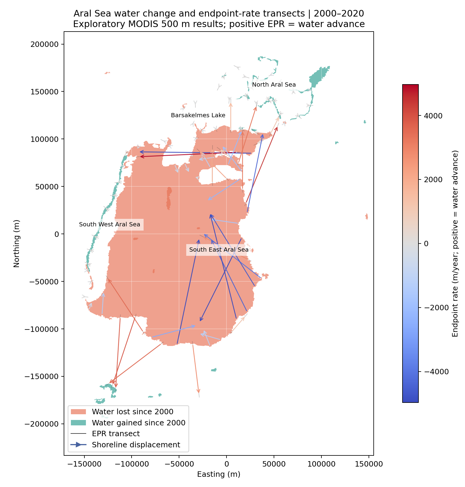
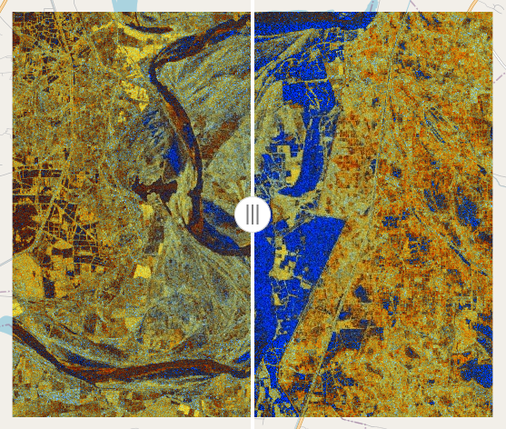

Public demonstrations
Every product in these repositories is regenerated from raw satellite imagery by the code. Each pipeline reruns end to end on any qualifying study area.

Aral Sea Waterline Change
Broad-area water-change mapping across the Aral Sea using MODIS (2000–2024) and Google Earth Engine: annual classifications, per-year thresholds and regional water-area time series. The approach echoes published multi-sensor water-mapping research in the same study region.

Flood Extent Explorer
An interactive Sentinel-1 flood explorer built around the 2022 Indus basin floods — choose your own area and two dates, compare radar mosaics, and export imagery for further analysis. Demonstrates the VH−VV open-water separation at work, any location, any time.

Coastal Shoreline Change Toolkit
An interactive, form-based demonstration of shoreline change: cloud masking, temporal compositing, shoreline extraction and projected transect geometry — all orchestrated in Python against Google Earth Engine, with methodology documented.